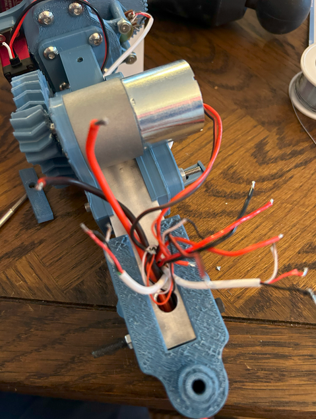
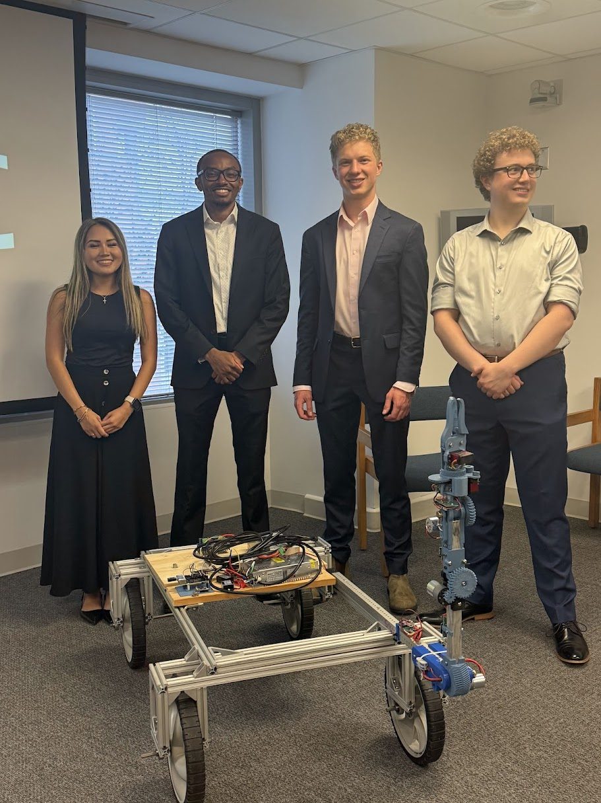
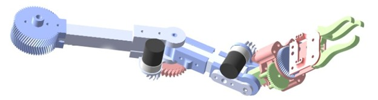
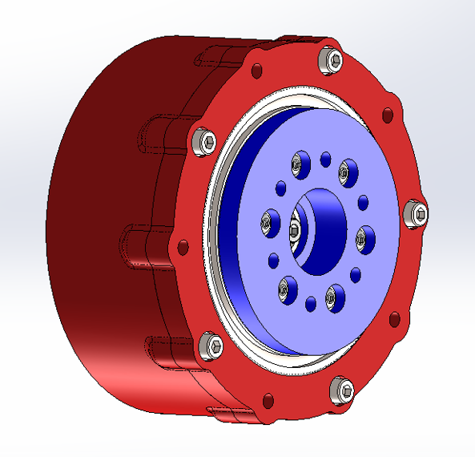
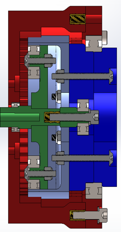
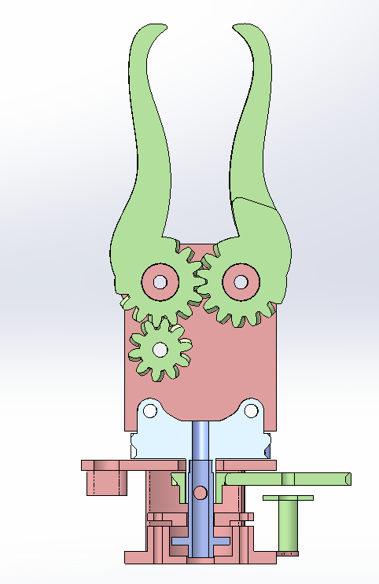
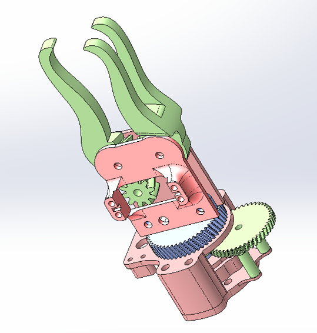
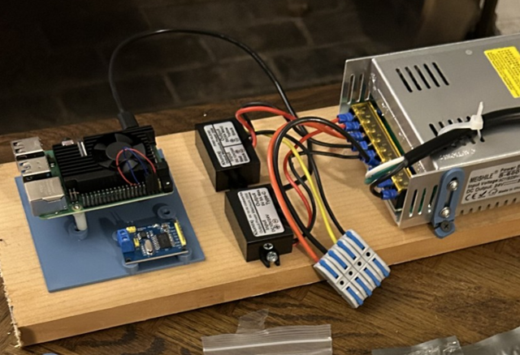
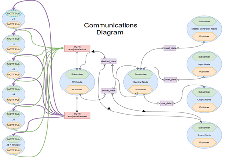
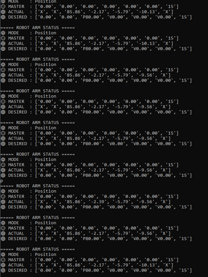

Jesse Gill Saligman
Modular Robotic Arm System
Senior Design Project | Drexel University
Overview
Inspired by NASA's RASC-AL competition, I led a team to develop a modular robotic arm system with distributed control architecture. The design emphasizes adaptability, repairability, and upgradeability with a streamlined four-wire backbone (HV+/-, LV+/-) enabling hot-swappable joints.
This prototype serves as a test platform to validate modular architecture and distributed control concepts. While exploring NASA RASC-AL concepts, we focused on developing a modular robotic arm that would be easily serviceable and upgradeable - essential characteristics for sustainable robotics.
The core innovation is the radical modularity achieved through a four-wire backbone that powers all joints, drastically reducing wiring complexity. Each joint contains its own electronics package for hot-swappability, and the distributed intelligence allows joints to operate autonomously with local PID control.
Key capabilities include component-level repairability without system shutdown, future-proof design allowing technology upgrades, redundancy through independent joint controllers, and simplified troubleshooting and maintenance.


Project Highlights

As project lead, I personally executed mechanical design, electrical systems, firmware development, prototyping, and validation testing while coordinating documentation and outreach.
While exploring NASA RASC-AL concepts including multifunctional robots and specialized swarms, we ultimately focused on developing a modular robotic arm for our senior design project. This approach offered significant advantages in serviceability, adaptability, and long-term upgrade potential.
Our modular system features independently replaceable joints, each with its own control electronics. This design enables easy maintenance and component upgrades without requiring full system downtime. The robotic arm was mounted on a custom chassis with distributed control architecture.
I implemented ROS 2 and MQTT communication to simulate real-world deployment scenarios, enabling comprehensive testing of autonomous capabilities and distributed control schemes. This approach allowed us to validate the system's performance in realistic operational environments.
Mechanical Design

I engineered the robotic arm from concept to implementation, performing singularity analysis, torque/payload calculations, and iterative prototyping for each joint.
The mechanical design centered around a 1"x1" aluminum backbone providing structural rigidity while keeping weight manageable. Each joint was independently mounted and 3D-printed using materials selected for specific functional requirements - PLA for non-critical components, PETG for impact resistance, and ABS for high-stress gears.
We used cost-effective potentiometers for position feedback, calibrated through custom regression analysis. To avoid circular dependencies between structural loads and motor selection, we pre-estimated motor weights before finalizing our Polulu 24V DC motors with 150:1 gearboxes.
Key solutions included a clamping mechanism for ABS components to prevent thermal warping, integrated cable routing through hollow joints, and a modular mounting system enabling rapid reconfiguration and maintenance.
To overcome torque limitations while minimizing backlash, I designed a fully 3D-printed harmonic drive system. The design objectives included achieving a 200% torque increase over direct drive and near-zero backlash operation.
The harmonic drive features a precision elliptical wave generator, a flex spline with optimized tooth profile, and a circular spline with 2% more teeth than the flex spline. This configuration creates a high gear reduction ratio in a compact form factor.
Although time constraints prevented full system integration, bench testing demonstrated the feasibility of high-torque additive manufacturing and achieved the target torque increase. The design showcases the potential for complex, high-performance components through advanced manufacturing techniques.


Joint 6 presented unique challenges requiring innovative solutions. The requirement for 600° rotation range exceeded the 270° capability of standard potentiometers, necessitating a gearing solution.
We implemented 4:1 potentiometer gearing to expand the measurable range, sacrificing some precision for significantly increased rotational capability. Axial loading constraints were addressed with a combined thrust and radial bearing system, while the hollow core design allowed internal wiring for the servo-driven gripper.
The parallel-jaw gripper features a 120° range of motion with interchangeable jaws for different payload types. Integrated force sensing via current monitoring enables delicate object manipulation. This joint demonstrates how mechanical constraints can be overcome through creative engineering solutions.


Electronics
The electronic system features a shared four-wire backbone (HV+/- and LV+/-) powering independent joint controllers, enabling modular expansion without system reconfiguration.
Each joint features a self-contained electronics package that taps into the four-wire backbone. After testing eight different microcontrollers, we selected the ESP8266 based on its MicroPython compatibility, analog input resolution, and Wi-Fi stability under load.
The joint electronics include a precision potentiometer for position feedback, a motor driver with current-limiting protection, and a DC gearmotor with thermal monitoring. Advanced features include automatic Wi-Fi reconnection routines, soft and hard motor current limits, and local PID execution at 100Hz.
This approach allows each joint to operate independently while maintaining system-wide coordination. The modular design enables quick replacement of any joint without affecting the overall system operation.

The chassis electronics form the central nervous system of the robotic platform. Power management includes 24V/12V dual-rail power supplies, high-efficiency (92%) DC-DC buck converters, and polyfuse protection on all circuits with redundant power pathways.
Control is centered around a Raspberry Pi 4B with dedicated cooling and dual-band Wi-Fi with Ethernet failover. Real-time system monitoring ensures operational safety and performance optimization.
Design for serviceability was a key consideration, implemented through color-coded wiring harnesses, hot-swappable power modules, diagnostic LEDs on critical circuits, and modular component arrangement. This approach minimizes downtime during maintenance and troubleshooting.

Software & Communication

Distributed architecture uses a Raspberry Pi-hosted network managing MQTT communication across all joints, supporting position and velocity control modes with real-time telemetry.
Our communication system implements MQTT with a structured bracket format: [DR, DL, J3, J4, J5, J6, J7]. This format efficiently handles three data types with a 10Hz update rate for real-time control.
Controller Data translates Xbox inputs into normalized velocities, while Desired Commands specify either positions (P[angle]) or velocities (V[value]). Actual Data provides real-time joint position feedback.
The system supports two operational modes: Velocity Mode for direct joystick-to-motor mapping, and Position Mode for precise joint angle specification. This dual-mode approach provides flexibility for different operational requirements.
The Raspberry Pi serves as the central controller, hosting a dedicated Wi-Fi network using hostapd, providing DHCP services through dnsmasq, and managing MQTT communication with Mosquitto. Secure SSH access enables remote management.
The control workflow begins when a user connects to the robot's Wi-Fi network and SSHs into the Raspberry Pi. After launching control scripts, the operator selects between velocity or position control modes before initiating control via Xbox controller or direct commands.
System management features include ROS 2 integration for simulation, a web-based dashboard using Flask, automatic error recovery routines, and comprehensive diagnostics logging. This robust control architecture ensures reliable operation in various scenarios.

Each ESP8266 microcontroller operates autonomously with a carefully designed startup sequence: automatic Wi-Fi connection with fallback, MQTT topic subscription, self-calibration routine, and position initialization.
During operation, the microcontroller parses bracket commands, converts potentiometer readings to angles via regression models, executes PID control loops at 100Hz, and implements velocity trapezoidal profiling for smooth motion.
Safety systems include software limit switches, over-current protection, watchdog timer resets, thermal shutdown protocols, and emergency stop handling. These features ensure safe operation even in unexpected conditions.

Prototyping & Assembly
Reverse assembly approach enabled independent validation of each joint, preventing integration complexities and accelerating development.
We adopted a reverse assembly methodology, beginning with the end-effector (gripper) and progressing backward through joints (J6 → J5 → J4 → J3). This approach allowed us to validate each subsystem independently before integration, significantly reducing complexity.
Software integration was maintained throughout development, with pre-flashed firmware for all joints, automated PID tuning scripts, and continuous integration testing. The modular communication architecture allowed us to develop and test each component separately.
Validation included early testing of complex components, progressive weight testing as joints were added, end-to-end communication validation, and real-world task simulation. This comprehensive approach ensured system reliability before final assembly.
Takeaways & Future Work
This platform is being transitioned to future engineering teams as a robust teaching tool for control systems, robotics, and modular design principles.
This project serves as an excellent educational platform for demonstrating control concepts like PID tuning, modular systems design principles, and distributed architecture implementation. Our professor plans to use it to practically illustrate how changing PID values affects system response.
Comprehensive documentation including setup guides, video tutorials, annotated code repositories, and system architecture documentation ensures smooth knowledge transfer to future teams. Younger students have already expressed interest in continuing development.
The enhancement roadmap includes completing J1/J2 for full 7-DOF capability, implementing CAN bus communication, adding higher resolution encoders, enhancing ROS 2 integration, developing swappable end effectors, and creating autonomous navigation capabilities. The platform's modular design makes these enhancements feasible and exciting.